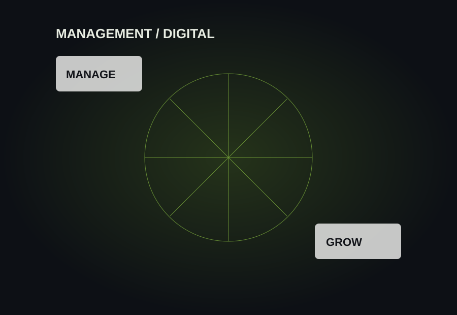

Interface
Responsive dark UI, animated loader/reveals, hover depth, spotlight cursor, terminal interaction, recruiter mode, Nova assistant and reduced-motion support.
This portfolio is itself a software build: static HTML/CSS/JavaScript with interaction, SEO structure and recruiter-focused presentation.

Responsive dark UI, animated loader/reveals, hover depth, spotlight cursor, terminal interaction, recruiter mode, Nova assistant and reduced-motion support.
Experience timeline, systems/build cards, case studies, skills constellation, live GitHub cards, contact actions and printable resume.
Canonical metadata, Open Graph/Twitter metadata, Person/WebSite structured data, sitemap, robots rules and semantic content.
A portfolio that functions as both a resume and a browsable demonstration of how Prince builds digital systems.
This build is part of a broader toolkit connecting business operations, data, automation, AI, software and web engineering.
Explore all systems & work ↗